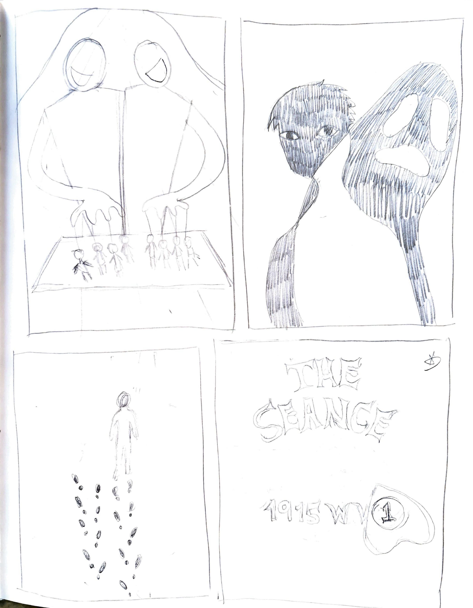
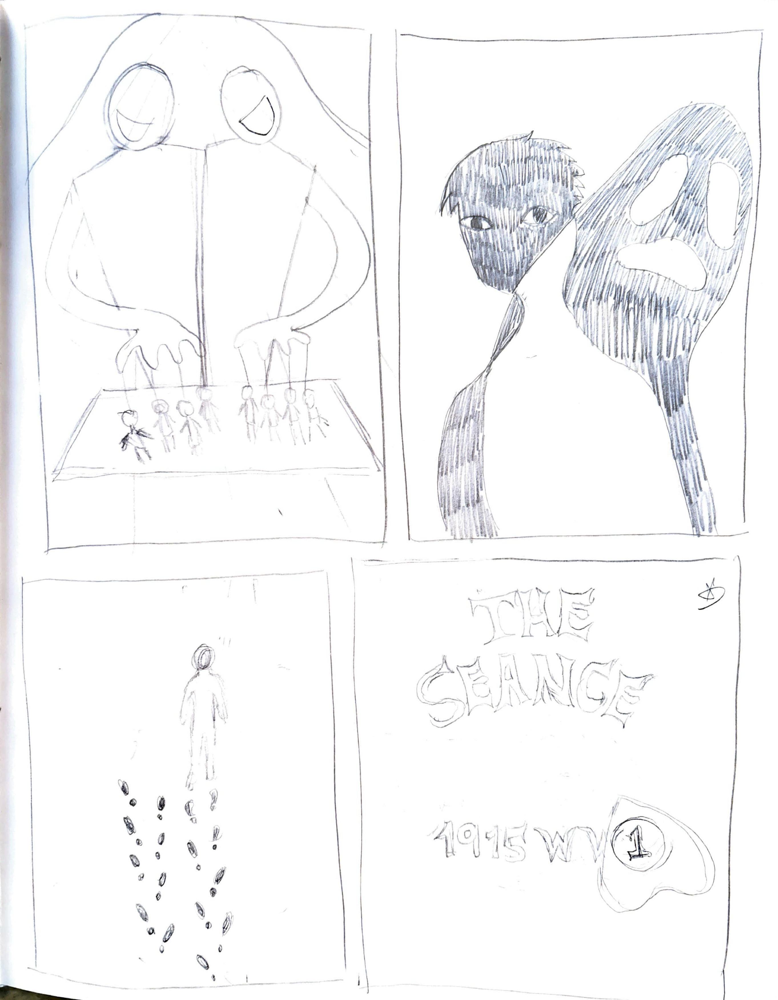

ABOUT THE BOOK COVERS
This project started out in my ART125 class with Emily Moody where we listen to the podcasts that were in our curriculum and
we get to choose one to create a book cover for. Given the choice, I ultimately chose Phoebe Judge's Criminal podcast.
Personally, I have always been fascinated by true crime stories and the psychological aspects behind them. Criminal podcast stood out to me
because of its unique storytelling approach and the way it delves into the human side of crime but at the same time has strange aspects
towards the crime story that keeps you on the edge of you seat, anticipating what exacly happened.
The book covers I created were inspired by the stories told in the podcast. Each cover represents a different episode,
capturing the essence of the narratives through visual elements and symbolism. The designs aim to evoke curiosity and intrigue,
drawing readers into the complex and often unsettling world of true crime.
HOW I STARTED
In complete honesty, I did not know where to fully start because while listening to the podcast series; ideas came flooding in
that I become indecisive or I'm drawing blanks because I have zero ideas popping up. In order to really get myself situated,
I relisten to the episodes and start jotting down important notes and keywords mentioned in the narrative. It really helps unclog
the creative block that's fogging up my mind which is why organizing my thoughts is the first thing I do before really diving in deep.
In the end of the research process, I oftentimes would have a list of keypoints and even sentences formed that describes the overall idea
of an episode. The larger the list, the better because then I would eliminate those that don't seem to align with my subconcious idea which leads
me to the final concept that I would like to pursue.
FROM BRAIN TO PAPER
After a successful exploration and settling for a specific concept, I immediately continued on to sketching my thoughts in hoping
it correlates with what my mind agrees on. I often have a mental battle with myself in terms of disagreement.
Usually after having as much sketches and ideas, we present it to the class and to out teacher for feedback and as well as voting
on what the majority likes more. Critique always has me worried that I don't execute my visualization
isn't executed well enough for others to see the vision.
Despite that, my classmates and teacher has always given me insight and even unexpected value towards sketches that aren't really
my favorite. They helped me see in different perspectives which always drives me to re-evaluate and scribble down
in paper again to settle on a final sketch.
With exploring much ideas as I dive deep into sketching, I settled onto sticking with a theme and have come to a conclusion that
optical illusion seems more fitting tot he overall vibe of the episodes I have chosen. It gives an air of mystery and intrigues since
their common theme is about the supernatural world and the occult.
HOW IT CAME TO BE
Digitizing the final product is my favorite phase in the design process because choosing colors, typography, etc.
is where I get to see the final product come to life. I oftentimes would experiment with different colors
and font styles to see what fits best with the overall vibe of the episode. Although, it is an excruciating process
with the variety of options, the thought of having a fully realized design is what keeps me going.
During this process, I often branch out to my friends; people who are not too familiar with design but are familiar
with the aesthetics. Listening what they have to see gives the opportunity to see if my design is communicating
the right message. If not, I would go back to the drawing board and re-evaluate my design choices. I also communicate
with my fellow classmates and teachers and they always give me constructive feeback about things I might have missed.


 
